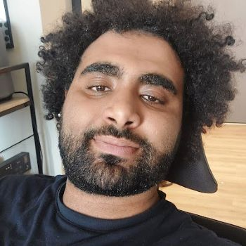

Bridging AI and Neuroscience (BrAIN) Group
Postdoc

Omer Moussa
PhD Student
BrAIN Alumni
Research Interns:- Michela Proietti
- Alan Sun (now Masters student at Carnegie Mellon University)
- Subba Reddy Oota (now Postdoc at TU Berlin)
- Ruchit Rawal (now PhD student at University of Maryland)
- Ana Meta Dolinar
- Aritra Mitra
- Khai Loong Aw (now PhD student at Stanford University)
- Dota Tianai Dong (now PhD student at MPI Psycholinguistics)